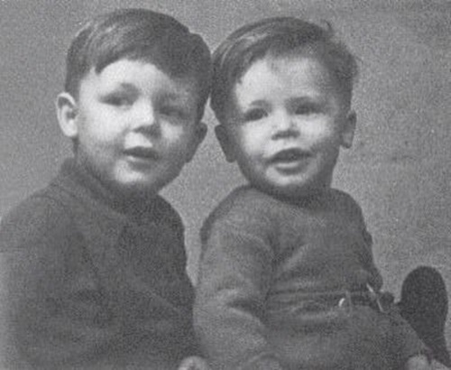
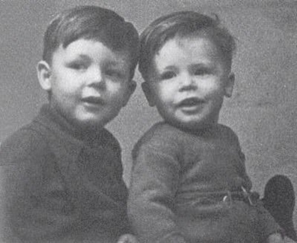

Paul
McCartney

Paul (born 18 June 1942) is an English singer-songwriter, multi-instrumentalist, and composer. He gained worldwide fame as the bass guitarist and singer for the rock band the Beatles, widely considered the most popular and influential group in the history of pop music. His songwriting partnership with John Lennon was the most successful of the post-war era.[2] After the group disbanded in 1970, he pursued a solo career and formed the band Wings with his first wife, Linda, and Denny Laine.
McCartney is one of the most successful composers and performers of all time. More than 2,200 artists have covered his Beatles song "Yesterday", making it one of the most covered songs in popular music history. Wings' 1977 release "Mull of Kintyre" is one of the all-time best-selling singles in the UK. A two-time inductee into the Rock and Roll Hall of Fame (as a member of the Beatles in 1988, and as a solo artist in 1999), and an 18-time Grammy Award winner, McCartney has written, or co-written, 32 songs that have reached number one on the Billboard Hot 100, and as of 2009 he has 25.5 million RIAA-certified units in the United States. McCartney, Lennon, George Harrison and Ringo Starr all received appointment as Members of the Order of the British Empire in 1965 and, in 1997, McCartney was knighted for services to music. McCartney is also one of the wealthiest musicians in the world, with an estimated net worth of US$1.2 billion.
 
